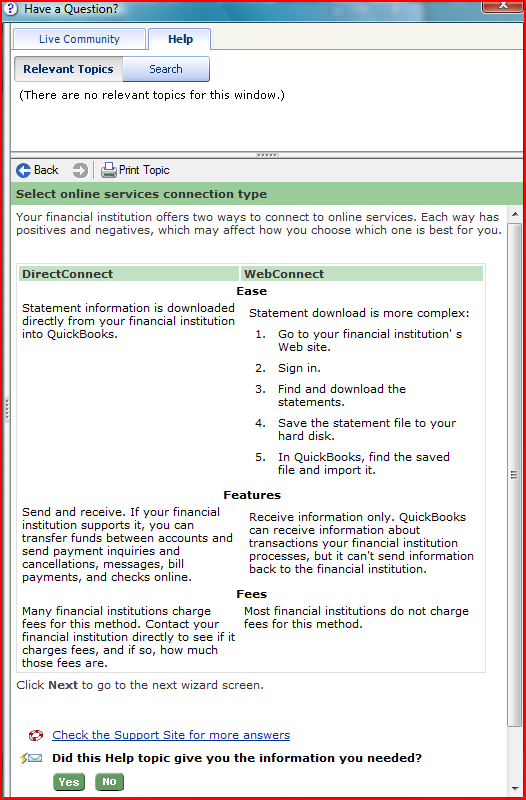

This page shows screen captures of dialog boxes, web pages, and other places where I've created content for the application's user interface.
All the examples on this page are from QuickBooks. The first group is part of the online banking feature. The team created a wizard for users to set up online banking for their QuickBooks bank accounts.
Unfortunately, the QuickBooks architecture required all other windows within the program to close to run the wizard. While I advocated that the program simply close all the windows and save all states and data, resources were not available to do this, so this compromise was necessary in case users had any windows with unsaved data open. |
Because the wizard had a different amount of steps depending on a number of variables, we didn't design in a progress indicator. So the first step is very simple, with a simple instruction . |
The first line in the next step confirms the choice of the previous step so when users select from the very large financial institution list, they can be sure they are selecting the right one for the QuickBooks account they have selected. (A QuickBooks company file can have many bank accounts.) The first link is for the most likely question a user might have at this step.
|
This step is probably the most crucial decision in the online banking setup process. Each choice has a brief description describing the consequences of each. The link leads to a help topic that I wrote (below) that provides a more fuller explanation. This is a good example of layering of information. Note that the link text gives you a good idea of what you expect to find if you follow the link. |
This is the help topic that more fully describes the difference between DirectConnect and WebConnect.  |
This step is necessary because of the complexity of setting up online banking between a QuickBooks account and a financial institution. Typically, a financial institution must also activate an account to allow QuickBooks to use the DirectConnect method. |
The final step for WebConnect allows users to go directly to a financial institution's website to download their first statement for import into QuickBooks. |
The next group is from the QuickBooks capability to customize forms, such as invoices, sales receipts, estimates, and so on. The previous way to do this was quite complex, done in a very busy dialog box. The UI designer on the project came up with a wizard-like process, and I created the content that went on the wizard pages.
When users first go to any form, they are presented with this message. I wrote the text content. |
This shows the first pane of this wizard. I developed the text that marks each step on the progress bar, as well as the heading text for each section. |
This second step needed a little bit more explanatory text. In addition to the headings, I created the text chunks under each. |
The challenge in this step was to come up with a small chunk of text that would clearly explain the "None of the above" option. The Note is necessary because of the limits of what this particular technology choice can show in the preview pane. |
The project managers wanted a summary page at the end of the wizard. I designed the text for this page. |
This is the dialog box where the new design gets applied to the different types of forms. The explanation was created to alleviate any fears users might have if they had done any previous customizations to any of their forms, to assure them that their previous customizations would not be lost. |